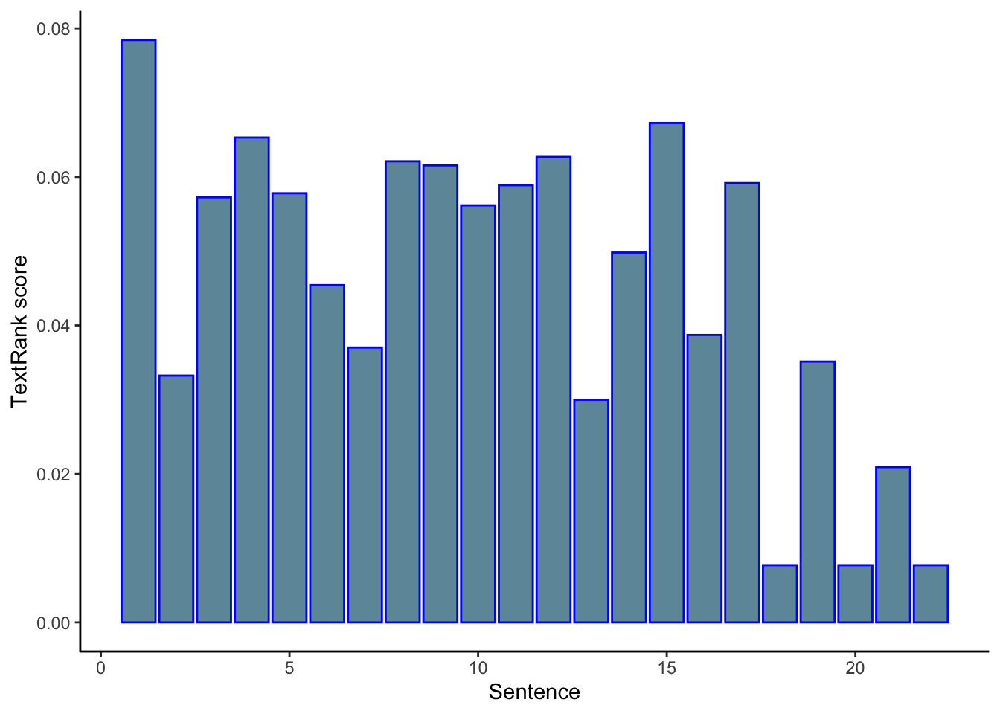
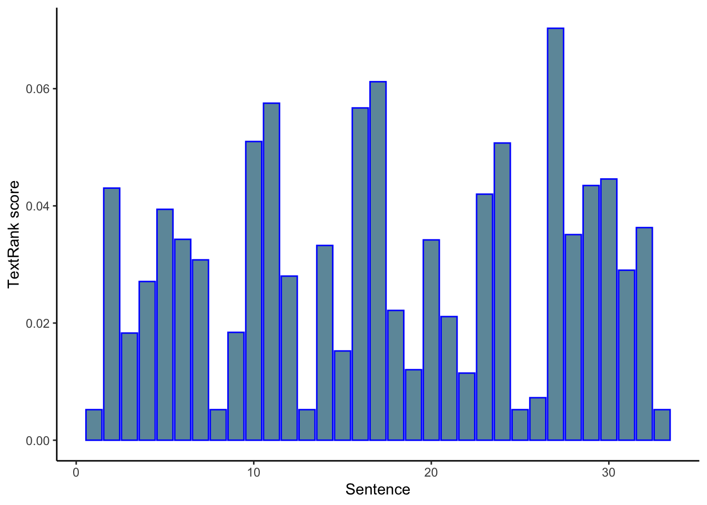
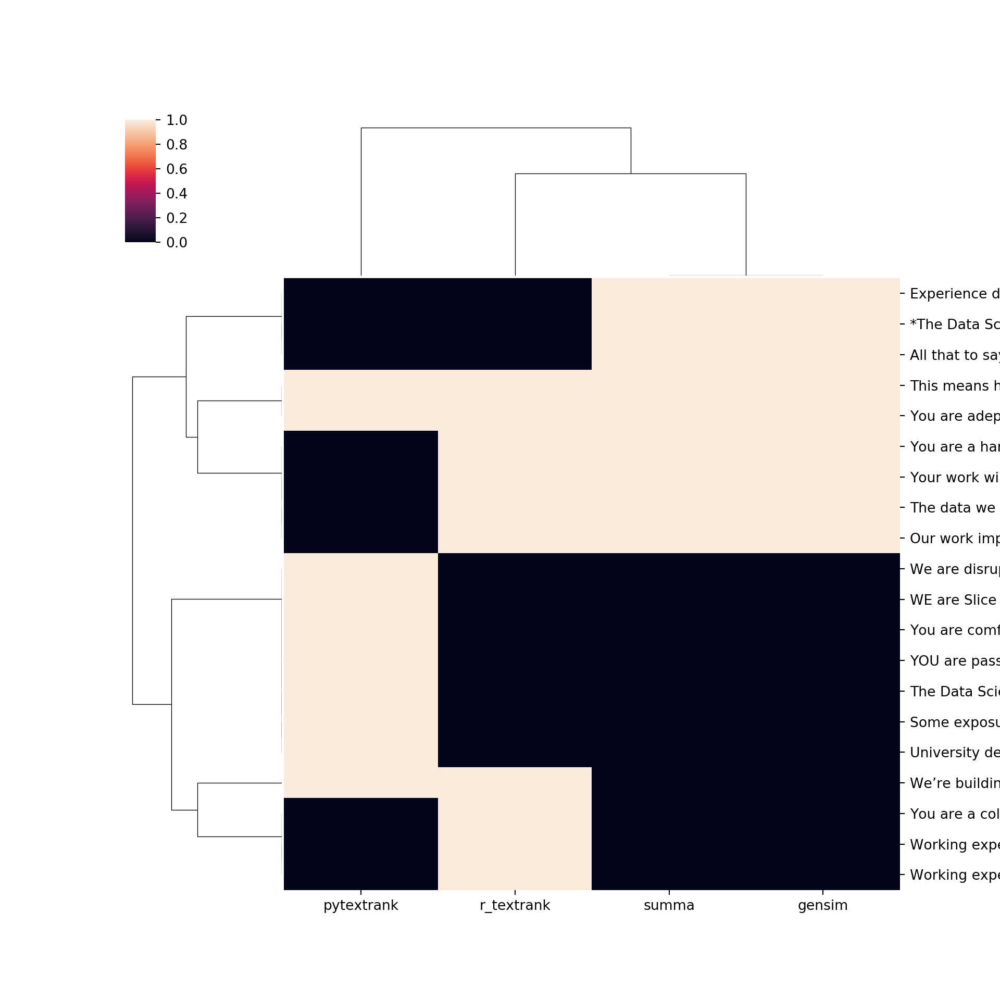

textrank is a R package that uses the textrank algorithm to 1) rank sentences by their “importance” and 2) identify keywords that appear more frequently in the test. The workflow presented here is a combination of posts by Jan Wijffels and Emil Hvitfeldt.
Let’s start by grabbing the article text used in the post by Emil Hvitfeldt, which is about a newly released Fitbit for kids. Here, I’m using a slightly different rvest command to scrape the article, as the instructions provided scraped a lot of extra website boilerplate text that muddied the waters, so to speak, and screwed up the textrank results.
## Import libraries
library(tidyverse)
library(tidytext)
library(textrank)
library(rvest)
url <- "http://time.com/5196761/fitbit-ace-kids-fitness-tracker/"
article <- read_html(url) %>%
html_nodes('p') %>%
html_text()
article <- paste(article, collapse = "\n")
print(article)## [1] "Fitbit is launching a new fitness tracker designed for children called the Fitbit Ace, which will go on sale for $99.95 in the second quarter of this year.\nThe Fitbit Ace looks a lot like the company’s Alta tracker, but with a few child-friendly tweaks. The most important of which is Fitbit’s new family account option, which gives parents control over how their child uses their tracker and is compliant with the Children’s Online Privacy Protection Act, or COPPA. Parents must approve who their child can connect with via the Fitbit app and can view their kid’s activity progress and sleep trends, the latter of which can help them manage their children’s bedtimes.\nLike many of Fitbit’s other products, the Fitbit Ace can automatically track steps, monitor active minutes, and remind kids to move when they’ve been still for too long. But while Fitbit’s default move goal is 30 minutes for adult users, the Ace’s will be 60 minutes, in line with the World Health Organization’s recommendation that children between the ages of five and 17 get an hour of daily physical activity per day. Fitbit says the tracker is designed for children eight years old and up.\nFitbit will also be introducing a Family Faceoff feature that lets kids compete in a five-day step challenge against the other members of their family account. The app also will reward children with in-app badges for achieving their health goals. Fitbit’s new child-friendly fitness band will be available in blue and purple, is showerproof, and should last for five days on a single charge.\nThe Ace launch is part of Fitbit’s broader goal of branching out to new audiences. The company also announced a new smartwatch on Tuesday called the Versa, which is being positioned as an everyday smartwatch rather than a fitness-only device or sports watch, like some of the company’s other products.\nAbove all else, the Ace is an effort to get children up and moving. The Centers for Disease Control and Prevention report that the percentage of children and adolescents affected by obesity has more than tripled since the 1970’s. But parents who want to encourage their children to move already have several less expensive options to choose from. Garmin’s $79.99 Vivofit Jr. 2, for example, comes in themed skins like these Minnie Mouse and Star Wars versions, while the wristband entices kids to move by reflecting their fitness achievements in an accompanying smartphone game. The $39.99 Nabi Compete, meanwhile, is sold in pairs so that family members can work together to achieve movement milestones.\nContact us at editors@time.com."As the textrank algorithm measures similiarity between sentences by the extend of word overlap between them, it is important to compare them only in terms of the most informative words. This is done by part-of-speech (POS) tagging, to identify nouns, verbs and adjectives.
Here we will use the udpipe package (Github repo), which provides language-agnostic tokenization, tagging, lemmatization and dependency parsing of raw text.
## Import library
library(udpipe)
## Create model
tagger <- udpipe_download_model("english")
tagger <- udpipe_load_model(tagger$file_model)
## Annotate text
article <- udpipe_annotate(tagger, article)Let’s look at the results:
article <- as.data.frame(article)
article %>%
head(10) %>%
select(-sentence) %>%
kable() %>%
kable_styling(bootstrap_options = c("striped", "hover"), full_width = F) %>%
scroll_box(width = "100%")| doc_id | paragraph_id | sentence_id | token_id | token | lemma | upos | xpos | feats | head_token_id | dep_rel | deps | misc |
|---|---|---|---|---|---|---|---|---|---|---|---|---|
| doc1 | 1 | 1 | 1 | Fitbit | Fitbit | PROPN | NNP | Number=Sing | 3 | nsubj | NA | NA |
| doc1 | 1 | 1 | 2 | is | be | AUX | VBZ | Mood=Ind|Number=Sing|Person=3|Tense=Pres|VerbForm=Fin | 3 | aux | NA | NA |
| doc1 | 1 | 1 | 3 | launching | launch | VERB | VBG | Tense=Pres|VerbForm=Part | 0 | root | NA | NA |
| doc1 | 1 | 1 | 4 | a | a | DET | DT | Definite=Ind|PronType=Art | 7 | det | NA | NA |
| doc1 | 1 | 1 | 5 | new | new | ADJ | JJ | Degree=Pos | 7 | amod | NA | NA |
| doc1 | 1 | 1 | 6 | fitness | fitness | NOUN | NN | Number=Sing | 7 | compound | NA | NA |
| doc1 | 1 | 1 | 7 | tracker | tracker | NOUN | NN | Number=Sing | 3 | obj | NA | NA |
| doc1 | 1 | 1 | 8 | designed | design | VERB | VBN | Tense=Past|VerbForm=Part | 7 | acl | NA | NA |
| doc1 | 1 | 1 | 9 | for | for | ADP | IN | NA | 10 | case | NA | NA |
| doc1 | 1 | 1 | 10 | children | child | NOUN | NNS | Number=Plur | 8 | obl | NA | NA |
“In order to find relevant keywords, the textrank algorithm constructs a word network. This network is constructed by looking which words follow one another. A link is set up between two words if they follow one another, the link gets a higher weight if these 2 words occur more frequenctly next to each other in the text.”
The only input to textrank_keywords() is the lemmatized words, with the option of filtering for only certain types of words, such as nouns, verbs and adjectives:
article_keywords <- textrank_keywords(article$lemma,
relevant = article$upos %in% c("NOUN", "VERB", "ADJ"))
article_keywords$keywords %>%
subset(freq > 1) %>%
kable()| keyword | ngram | freq |
|---|---|---|
| child | 1 | 12 |
| tracker | 1 | 4 |
| kid | 1 | 4 |
| move | 1 | 4 |
| parent | 1 | 3 |
| app | 1 | 3 |
| other | 1 | 3 |
| goal | 1 | 3 |
| fitness | 1 | 3 |
| year | 1 | 2 |
| family-account | 2 | 2 |
| account | 1 | 2 |
| activity | 1 | 2 |
| step | 1 | 2 |
| family | 1 | 2 |
| new | 1 | 2 |
Loosely, the textrank algorithm computes similarities between a pair of sentences by the number of words that they have in common.
The textrank_sentences() function takes in two inputs 1:
A dataframe with sentences:
sentences <- unique(article[, c("sentence_id", "sentence")])A dataframe with words which are part of each sentence:
terminology <- article %>%
filter(upos %in% c("NOUN", "VERB", "ADJ")) %>%
select(sentence_id, lemma) Based on these two dataframes, the function calculates the pairwise distance between each sentence by computing how many terms are overlapping, in terms of Jaccard distance. These pairwise distances among the sentences are next passed on to Google’s pagerank algorithm to identify the most relevant sentences.
tr <- textrank_sentences(data = sentences,
terminology = terminology)Let’s see how the sentences rank:
kable(tr[['sentences']] %>% arrange(-textrank))| textrank_id | sentence | textrank |
|---|---|---|
| 1 | Fitbit is launching a new fitness tracker designed for children called the Fitbit Ace, which will go on sale for $99.95 in the second quarter of this year. | 0.0784357 |
| 15 | Above all else, the Ace is an effort to get children up and moving. | 0.0672520 |
| 4 | The most important of which is Fitbit’s new family account option, which gives parents control over how their child uses their tracker and is compliant with the Children’s Online Privacy Protection Act, or COPPA. | 0.0652963 |
| 12 | Fitbit’s new child-friendly fitness band will be available in blue and purple, is showerproof, and should last for five days on a single charge. | 0.0626908 |
| 8 | But while Fitbit’s default move goal is 30 minutes for adult users, the Ace’s will be 60 minutes, in line with the World Health Organization’s recommendation that children between the ages of five and 17 get an hour of daily physical activity per day. | 0.0621032 |
| 9 | Fitbit says the tracker is designed for children eight years old and up. | 0.0615568 |
| 17 | But parents who want to encourage their children to move already have several less expensive options to choose from. | 0.0591652 |
| 11 | The app also will reward children with in-app badges for achieving their health goals. | 0.0588857 |
| 5 | Parents must approve who their child can connect with via the Fitbit app and can view their kid’s activity progress and sleep trends, the latter of which can help them manage their children’s bedtimes. | 0.0578003 |
| 3 | Ace looks a lot like the company’s Alta tracker, but with a few child-friendly tweaks. | 0.0572568 |
| 10 | Fitbit will also be introducing a Family Faceoff feature that lets kids compete in a five-day step challenge against the other members of their family account. | 0.0561673 |
| 14 | The company also announced a new smartwatch on Tuesday called the Versa, which is being positioned as an everyday smartwatch rather than a fitness-only device or sports watch, like some of the company’s other products. | 0.0498193 |
| 6 | Like many of Fitbit’s other products, the Fitbit | 0.0454276 |
| 16 | The Centers for Disease Control and Prevention report that the percentage of children and adolescents affected by obesity has more than tripled since the 1970’s. | 0.0387110 |
| 7 | Ace can automatically track steps, monitor active minutes, and remind kids to move when they’ve been still for too long. | 0.0370217 |
| 19 | Wars versions, while the wristband entices kids to move by reflecting their fitness achievements in an accompanying smartphone game. | 0.0351309 |
| 2 | The Fitbit | 0.0332401 |
| 13 | The Ace launch is part of Fitbit’s broader goal of branching out to new audiences. | 0.0299872 |
| 21 | Nabi Compete, meanwhile, is sold in pairs so that family members can work together to achieve movement milestones. | 0.0209157 |
| 18 | Garmin’s $79.99 Vivofit Jr. 2, for example, comes in themed skins like these Minnie Mouse and Star | 0.0077121 |
| 20 | The $39.99 | 0.0077121 |
| 22 | Contact us at editors@time.com. | 0.0077121 |
Makes sense, but it would be nice to have a human-made summary for comparison.
Alternatively, we can see what the top five most “informative” sentences are in their order of appearance:
s <- summary(tr, n = 5, keep.sentence.order = TRUE)
cat(s, sep = "\n\n")## Fitbit is launching a new fitness tracker designed for children called the Fitbit Ace, which will go on sale for $99.95 in the second quarter of this year.
##
## The most important of which is Fitbit’s new family account option, which gives parents control over how their child uses their tracker and is compliant with the Children’s Online Privacy Protection Act, or COPPA.
##
## But while Fitbit’s default move goal is 30 minutes for adult users, the Ace’s will be 60 minutes, in line with the World Health Organization’s recommendation that children between the ages of five and 17 get an hour of daily physical activity per day.
##
## Fitbit’s new child-friendly fitness band will be available in blue and purple, is showerproof, and should last for five days on a single charge.
##
## Above all else, the Ace is an effort to get children up and moving.Finally, we can also visualize the textrank value of sentences by their order of appearance in the text.
tr[["sentences"]] %>%
ggplot(aes(textrank_id, textrank, fill = textrank_id)) +
geom_col(color="blue", fill=rgb(0.1,0.4,0.5,0.7)) +
theme_classic() +
guides(fill = "none") +
labs(x = "Sentence",
y = "TextRank score")
Lately, I’ve been trying to analyze job descriptions. Let’s see how textrank summarization performs on one for a data scientist position.
link <- "https://ca.indeed.com/viewjob?cmp=Slice-Insurance-Technologies-Inc.&t=Data+Scientist&jk=35c9914ee9b0a052&sjdu=vQIlM60yK_PwYat7ToXhk3myaatk1OsAkhQIw2UEit1eiAfw8fAJl6BKuZ5V5P0TgQjo7h2qNGvAZ_80Lr3XxA&tk=1e1nuvuml0np3000&adid=335410488&pub=4a1b367933fd867b19b072952f68dceb&vjs=3"
description <- tryCatch(
as.character(link) %>% read_html() %>% html_nodes(xpath='//*[(@id = "jobDescriptionText")]') %>% map(xml_contents),
error=function(e){NA}
)
if (is.null(description)){
desc <- NA
}
final <- tryCatch(
paste(as.character(description[[1]]), collapse=' '),
error=function(e){NA}
)
if (is.null(description)){
NA
}
job_des_raw <- html_text(read_html(final))
print(job_des_raw)## [1] "WE are Slice Labs (Slice). We’re building a team of innovators and disruptors to change the insurance experience to meet the demands of an on-demand world. We are disrupting the idea that insurance needs to be a fixed product, with a fixed term, with fixed coverage. We believe it can and should be all digital and on-demand, so customers get only the coverage they need, right when they need it. At Slice, we’re focused on ensuring our products provide a positive, individualized customer experience. Our smaller teams invite broader thinking and problem solving, where nobody is pigeonholed into a predetermined role. We work in an open, supportive, environment that values and promotes inclusiveness, innovation, and collaboration. It’s fast-paced, dynamic and fulfilling.\n *The Data Science team is key to Slice’s ongoing success. The data we have and the models we build are foundational to our platform and quite literally drive our business. Our work improves the customer experience, grows our market share and drives business outcomes. This is an opportunity to play an active part in delivering our data vision and determining how we get there. All that to say: Data Science work here at Slice is far from theoretical.\n This ROLE develops and executes Data Science projects across the company. This means hands-on work at all points in the data lifecycle, including data wrangling and mining; feature engineering; model-building and testing; and implementation and communication. Your work will ensure that all our decisions are data-driven - this means that you will have a direct impact on the customer experience by influencing critical decisions on resource deployment and customer engagement. Our immediate applications include marketing analytics, fraud prevention, and risk/value modeling. (Our future applications are boundless!)\n YOU are passionate about data. You enjoy being able to combine your analytical, technical and business skills in one role. You love solving problems and predicting behaviours. You are a collaborator and a communicator and are energized by working with multidisciplinary teams. You are a hands-on learner and are excited by the thought of moving past theory and examples to real-time data science work.\n You bring: \n An effective communication style with an ability to translate “the complex” to “the simple”. You are adept at data visualizations and have experience working with real-time data.4+ years of practical experience using data, models, and common sense to solve tough problems in a collaborative environment. Experience deploying models is a plus!Working experience with Python, including Pandas, NumPy, scikit-learn, NLTK, and Keras/TensorFlow.An understanding of statistical and predictive modeling concepts, machine learning algorithms, clustering and classification techniques.Some exposure to one or more sub-fields of data science, especially GIS/spatial analysis; graph theory/network analysis; or natural language processing (NLP).Working experience with non-Excel BI tools such as Tableau, Looker, Superset, PowerBI, etc.You are comfortable building datasets using traditional relational databases and you’re familiar with alternative databases (noSQL, graph databases) or big data platforms such as Apache Spark.University degree in engineering, applied statistics, data mining, machine learning, mathematics or a related quantitative discipline.*\n Job Types: Full-time, Permanent\n Experience:\n Data Science: 4 years (Required)Location:\n Ottawa, ON (Preferred)"Part-of-speech tagging:
## Create model
tagger <- udpipe_download_model("english")
tagger <- udpipe_load_model(tagger$file_model)
job_des <- udpipe_annotate(tagger, job_des_raw)
job_des <- as.data.frame(job_des)
job_des %>%
head(10) %>%
select(-sentence) %>%
kable() %>%
kable_styling(bootstrap_options = c("striped", "hover"), full_width = F) %>%
scroll_box(width = "100%")| doc_id | paragraph_id | sentence_id | token_id | token | lemma | upos | xpos | feats | head_token_id | dep_rel | deps | misc |
|---|---|---|---|---|---|---|---|---|---|---|---|---|
| doc1 | 1 | 1 | 1 | WE | we | PRON | PRP | Case=Nom|Number=Plur|Person=1|PronType=Prs | 4 | nsubj | NA | NA |
| doc1 | 1 | 1 | 2 | are | be | AUX | VBP | Mood=Ind|Tense=Pres|VerbForm=Fin | 4 | cop | NA | NA |
| doc1 | 1 | 1 | 3 | Slice | slice | PROPN | NNP | Number=Sing | 4 | compound | NA | NA |
| doc1 | 1 | 1 | 4 | Labs | labs | PROPN | NNP | Number=Sing | 0 | root | NA | NA |
| doc1 | 1 | 1 | 5 | ( | ( | PUNCT | -LRB- | NA | 6 | punct | NA | SpaceAfter=No |
| doc1 | 1 | 1 | 6 | Slice | slice | PROPN | NNP | Number=Sing | 4 | appos | NA | SpaceAfter=No |
| doc1 | 1 | 1 | 7 | ) | ) | PUNCT | -RRB- | NA | 6 | punct | NA | SpaceAfter=No |
| doc1 | 1 | 1 | 8 | . | . | PUNCT | . | NA | 4 | punct | NA | NA |
| doc1 | 1 | 2 | 1 | We | we | PRON | PRP | Case=Nom|Number=Plur|Person=1|PronType=Prs | 2 | nsubj | NA | SpaceAfter=No |
| doc1 | 1 | 2 | 2 | ’re | ’re | VERB | VBP | Mood=Ind|Tense=Pres|VerbForm=Fin | 0 | root | NA | NA |
The keyword extraction functionality seemed lack-luster for this example too, giving what is essentially a list of most frequently appearing words.
job_des_keywords <- textrank_keywords(job_des$lemma,
relevant = job_des$upos %in% c("NOUN", "VERB", "ADJ"))
job_des_keywords$keywords %>%
subset(freq > 1) %>%
kable()| keyword | ngram | freq |
|---|---|---|
| data | 1 | 12 |
| experience | 1 | 8 |
| work | 1 | 8 |
| ’re | 1 | 3 |
| team | 1 | 3 |
| demand | 1 | 3 |
| customer-experience | 2 | 3 |
| problem | 1 | 3 |
| role | 1 | 3 |
| business | 1 | 3 |
| data-science | 2 | 3 |
| science | 1 | 3 |
| learn | 1 | 3 |
| database | 1 | 3 |
| product | 1 | 2 |
| fix | 1 | 2 |
| customer | 1 | 2 |
| mean | 1 | 2 |
| building | 1 | 2 |
| communication | 1 | 2 |
| modeling | 1 | 2 |
| theory | 1 | 2 |
| work-experience | 2 | 2 |
| analysis | 1 | 2 |
| such | 1 | 2 |
Finally, let’s look at the sentence rankings:
sentences <- unique(job_des[, c("sentence_id", "sentence")])
terminology <- job_des %>%
filter(upos %in% c("NOUN", "VERB", "ADJ")) %>%
select(sentence_id, lemma)
tr <- textrank_sentences(data = sentences,
terminology = terminology)
kable(tr[['sentences']] %>% arrange(-textrank))| textrank_id | sentence | textrank |
|---|---|---|
| 27 | You are adept at data visualizations and have experience working with real-time data.4+ years of practical experience using data, models, and common sense to solve tough problems in a collaborative environment. | 0.0703072 |
| 17 | Your work will ensure that all our decisions are data-driven - this means that you will have a direct impact on the customer experience by influencing critical decisions on resource deployment and customer engagement. | 0.0611901 |
| 11 | Our work improves the customer experience, grows our market share and drives business outcomes. | 0.0575264 |
| 16 | This means hands-on work at all points in the data lifecycle, including data wrangling and mining; feature engineering; model-building and testing; and implementation and communication. | 0.0567150 |
| 10 | The data we have and the models we build are foundational to our platform and quite literally drive our business. | 0.0509835 |
| 24 | You are a hands-on learner and are excited by the thought of moving past theory and examples to real-time data science work. | 0.0507275 |
| 30 | Working experience with non-Excel BI tools such as Tableau, Looker, Superset, PowerBI, etc.You are comfortable building datasets using traditional relational databases and you’re familiar with alternative databases (noSQL, graph databases) or big data platforms such as Apache Spark.University degree in engineering, applied statistics, data mining, machine learning, mathematics or a related quantitative discipline.* | 0.0445864 |
| 29 | Working experience with Python, including Pandas, NumPy, scikit-learn, NLTK, and Keras/TensorFlow.An understanding of statistical and predictive modeling concepts, machine learning algorithms, clustering and classification techniques.Some exposure to one or more sub-fields of data science, especially GIS/spatial analysis; graph theory/network analysis; or natural language processing (NLP). | 0.0434717 |
| 2 | We’re building a team of innovators and disruptors to change the insurance experience to meet the demands of an on-demand world. | 0.0430290 |
| 23 | You are a collaborator and a communicator and are energized by working with multidisciplinary teams. | 0.0420002 |
| 5 | At Slice, we’re focused on ensuring our products provide a positive, individualized customer experience. | 0.0394096 |
| 32 | Data Science: 4 years (Required)Location: | 0.0362884 |
| 28 | Experience deploying models is a plus! | 0.0350955 |
| 6 | Our smaller teams invite broader thinking and problem solving, where nobody is pigeonholed into a predetermined role. | 0.0342888 |
| 20 | YOU are passionate about data. | 0.0341904 |
| 14 | Science work here at Slice is far from theoretical. | 0.0332422 |
| 7 | We work in an open, supportive, environment that values and promotes inclusiveness, innovation, and collaboration. | 0.0307840 |
| 31 | Job Types: Full-time, Permanent Experience: | 0.0290179 |
| 12 | This is an opportunity to play an active part in delivering our data vision and determining how we get there. | 0.0280136 |
| 4 | We believe it can and should be all digital and on-demand, so customers get only the coverage they need, right when they need it. | 0.0270914 |
| 18 | Our immediate applications include marketing analytics, fraud prevention, and risk/value modeling. | 0.0221562 |
| 21 | You enjoy being able to combine your analytical, technical and business skills in one role. | 0.0211016 |
| 9 | *The Data Science team is key to Slice’s ongoing success. | 0.0184101 |
| 3 | We are disrupting the idea that insurance needs to be a fixed product, with a fixed term, with fixed coverage. | 0.0182936 |
| 15 | This ROLE develops and executes Data Science projects across the company. | 0.0152376 |
| 19 | (Our future applications are boundless!) | 0.0120358 |
| 22 | You love solving problems and predicting behaviours. | 0.0114608 |
| 26 | An effective communication style with an ability to translate “the complex” to “the simple”. | 0.0072589 |
| 1 | WE are Slice Labs (Slice). | 0.0052174 |
| 8 | It’s fast-paced, dynamic and fulfilling. | 0.0052174 |
| 13 | All that to say: Data | 0.0052174 |
| 25 | You bring: | 0.0052174 |
| 33 | Ottawa, ON (Preferred) | 0.0052174 |
library(magrittr)
x <- tr[['sentences']] %>% arrange(-textrank) %>% head(10)Not bad, the top sentences are the big picture stuff that might give an overall impression of the job.
And, just out of interest:
tr[["sentences"]] %>%
ggplot(aes(textrank_id, textrank, fill = textrank_id)) +
geom_col(color="blue", fill=rgb(0.1,0.4,0.5,0.7)) +
theme_classic() +
guides(fill = "none") +
labs(x = "Sentence",
y = "TextRank score")
textrank is a nifty little package for simple extractive text summary. However, it is important to think carefully about the type of summary you are aiming for, and whether this type of extractive summaries by the textrank algorithm can accomplish it.
Pros
Easy to use
Summaries make sense at a glance
Cons
Hard to know if these summaries really are of good quality, as there are no easy ways to validate the quality of the summaries
The measure of similarities between sentences, namely the number of words that two sentences have in common, is quite simplistic, and so can only produce “summaries” in a certain sense
import spacy
import pytextrank
# example text
text = r.job_des_raw
# load a spaCy model, depending on language, scale, etc.
nlp = spacy.load("en_core_web_sm")
# add PyTextRank to the spaCy pipeline
tr = pytextrank.TextRank()
nlp.add_pipe(tr.PipelineComponent, name="textrank", last=True)
doc = nlp(text)# examine the top-ranked phrases in the document
pytextrank = []
for c in list(doc._.textrank.summary(limit_phrases=10, limit_sentences=10)):
pytextrank.append(str(c))
print('---')## ---
## ---
## ---
## ---
## ---
## ---
## ---
## ---
## ---
## ---for p in doc._.phrases[:10]:
print('{:.4f} {:5d} {}'.format(p.rank, p.count, p.text))
print(p.chunks)## 0.0789 1 data mining
## [data mining]
## 0.0768 1 data science
## [data science]
## 0.0764 3 data
## [data, data, The data]
## 0.0762 1 experience deploying models
## [Experience deploying models]
## 0.0746 1 data visualizations
## [data visualizations]
## 0.0741 1 big data platforms
## [big data platforms]
## 0.0739 1 data wrangling
## [data wrangling]
## 0.0725 1 experience
## [experience]
## 0.0717 1 nlp).working experience
## [NLP).Working experience]
## 0.0713 1 practical experience
## [practical experience]from gensim.summarization.summarizer import summarize
for sent in summarize(text, split=True, ratio=0.3):
print(sent)
print('-')## We’re building a team of innovators and disruptors to change the insurance experience to meet the demands of an on-demand world.
## -
## The data we have and the models we build are foundational to our platform and quite literally drive our business.
## -
## Our work improves the customer experience, grows our market share and drives business outcomes.
## -
## All that to say: Data Science work here at Slice is far from theoretical.
## -
## This means hands-on work at all points in the data lifecycle, including data wrangling and mining; feature engineering; model-building and testing; and implementation and communication.
## -
## Your work will ensure that all our decisions are data-driven - this means that you will have a direct impact on the customer experience by influencing critical decisions on resource deployment and customer engagement.
## -
## You are a collaborator and a communicator and are energized by working with multidisciplinary teams.
## -
## You are a hands-on learner and are excited by the thought of moving past theory and examples to real-time data science work.
## -
## You are adept at data visualizations and have experience working with real-time data.4+ years of practical experience using data, models, and common sense to solve tough problems in a collaborative environment.
## -from summa.summarizer import summarize
for sent in summarize(text, split=True, ratio=0.3):
print(sent)
print('-')## *The Data Science team is key to Slice’s ongoing success.
## -
## The data we have and the models we build are foundational to our platform and quite literally drive our business.
## -
## Our work improves the customer experience, grows our market share and drives business outcomes.
## -
## All that to say: Data Science work here at Slice is far from theoretical.
## -
## This means hands-on work at all points in the data lifecycle, including data wrangling and mining; feature engineering; model-building and testing; and implementation and communication.
## -
## Your work will ensure that all our decisions are data-driven - this means that you will have a direct impact on the customer experience by influencing critical decisions on resource deployment and customer engagement.
## -
## You are a hands-on learner and are excited by the thought of moving past theory and examples to real-time data science work.
## -
## You are adept at data visualizations and have experience working with real-time data.4+ years of practical experience using data, models, and common sense to solve tough problems in a collaborative environment.
## -
## Experience deploying models is a plus!Working experience with Python, including Pandas, NumPy, scikit-learn, NLTK, and Keras/TensorFlow.An understanding of statistical and predictive modeling concepts, machine learning algorithms, clustering and classification techniques.Some exposure to one or more sub-fields of data science, especially GIS/spatial analysis; graph theory/network analysis; or natural language processing (NLP).Working experience with non-Excel BI tools such as Tableau, Looker, Superset, PowerBI, etc.You are comfortable building datasets using traditional relational databases and you’re familiar with alternative databases (noSQL, graph databases) or big data platforms such as Apache Spark.University degree in engineering, applied statistics, data mining, machine learning, mathematics or a related quantitative discipline.*
## -res = r.x
z = res['sentence'].tolist()import pandas as pd
import collections
gensim = summarize(text, split=True, ratio=0.3)
summa = summarize(text, split=True, ratio=0.3)
a = pytextrank + gensim + summa + z
counter=collections.Counter(a)
pd.DataFrame(counter, index=[0]).T## 0
## You are adept at data visualizations and have e... 4
## Some exposure to one or more sub-fields of data... 1
## University degree in engineering, applied stati... 1
## The Data Science team is key to Slice’s ongoing... 1
## YOU are passionate about data. 1
## You are comfortable building datasets using tra... 1
## This means hands-on work at all points in the d... 4
## WE are Slice Labs (Slice). 1
## We’re building a team of innovators and disrupt... 2
## We are disrupting the idea that insurance needs... 1
## *The Data Science team is key to Slice’s ongoin... 2
## The data we have and the models we build are fo... 3
## Our work improves the customer experience, grow... 3
## All that to say: Data Science work here at Slic... 2
## Your work will ensure that all our decisions ar... 3
## You are a hands-on learner and are excited by t... 3
## Experience deploying models is a plus!Working e... 2
## Working experience with non-Excel BI tools such... 1
## Working experience with Python, including Panda... 1
## You are a collaborator and a communicator and a... 1summa_df = pd.DataFrame({'phrases': summa,
'summa': [1]*len(summa)})
#summa_df.set_index('phrases')
gensim_df = pd.DataFrame({'phrases': gensim,
'gensim': [1]*len(gensim)})
#gensim_df.set_index('phrases')
pytextrank_df = pd.DataFrame({'phrases': pytextrank,
'pytextrank': [1]*len(pytextrank)})
#pytextrank_df.set_index('phrases')
textrank_df = pd.DataFrame({'phrases': z,
'r_textrank': [1]*len(z)})from functools import reduce
v = reduce(lambda left,right: pd.merge(left,right,on='phrases', how='outer'), [summa_df, gensim_df, pytextrank_df, textrank_df])
v = v.fillna('0')
v = v.set_index('phrases')
for x in v:
v[x] = pd.to_numeric(v[x])import seaborn as sns
import matplotlib.pyplot as plt
g=sns.clustermap(v)
g.savefig("output.png")
plt.show()
k <- py$v
kable(k)| summa | gensim | pytextrank | r_textrank | |
|---|---|---|---|---|
| *The Data Science team is key to Slice’s ongoing success. | 1 | 1 | 0 | 0 |
| The data we have and the models we build are foundational to our platform and quite literally drive our business. | 1 | 1 | 0 | 1 |
| Our work improves the customer experience, grows our market share and drives business outcomes. | 1 | 1 | 0 | 1 |
| All that to say: Data Science work here at Slice is far from theoretical. | 1 | 1 | 0 | 0 |
| This means hands-on work at all points in the data lifecycle, including data wrangling and mining; feature engineering; model-building and testing; and implementation and communication. | 1 | 1 | 1 | 1 |
| Your work will ensure that all our decisions are data-driven - this means that you will have a direct impact on the customer experience by influencing critical decisions on resource deployment and customer engagement. | 1 | 1 | 0 | 1 |
| You are a hands-on learner and are excited by the thought of moving past theory and examples to real-time data science work. | 1 | 1 | 0 | 1 |
| You are adept at data visualizations and have experience working with real-time data.4+ years of practical experience using data, models, and common sense to solve tough problems in a collaborative environment. | 1 | 1 | 1 | 1 |
| Experience deploying models is a plus!Working experience with Python, including Pandas, NumPy, scikit-learn, NLTK, and Keras/TensorFlow.An understanding of statistical and predictive modeling concepts, machine learning algorithms, clustering and classification techniques.Some exposure to one or more sub-fields of data science, especially GIS/spatial analysis; graph theory/network analysis; or natural language processing (NLP).Working experience with non-Excel BI tools such as Tableau, Looker, Superset, PowerBI, etc.You are comfortable building datasets using traditional relational databases and you’re familiar with alternative databases (noSQL, graph databases) or big data platforms such as Apache Spark.University degree in engineering, applied statistics, data mining, machine learning, mathematics or a related quantitative discipline.* | 1 | 1 | 0 | 0 |
| Some exposure to one or more sub-fields of data science, especially GIS/spatial analysis; graph theory/network analysis; or natural language processing (NLP).Working experience with non-Excel BI tools such as Tableau, Looker, Superset, PowerBI, etc. | 0 | 0 | 1 | 0 |
| University degree in engineering, applied statistics, data mining, machine learning, mathematics or a related quantitative discipline. | 0 | 0 | 1 | 0 |
| The Data Science team is key to Slice’s ongoing success. | 0 | 0 | 1 | 0 |
| YOU are passionate about data. | 0 | 0 | 1 | 0 |
| You are comfortable building datasets using traditional relational databases and you’re familiar with alternative databases (noSQL, graph databases) or big data platforms such as Apache Spark. | 0 | 0 | 1 | 0 |
| WE are Slice Labs (Slice). | 0 | 0 | 1 | 0 |
| We’re building a team of innovators and disruptors to change the insurance experience to meet the demands of an on-demand world. | 0 | 0 | 1 | 1 |
| We are disrupting the idea that insurance needs to be a fixed product, with a fixed term, with fixed coverage. | 0 | 0 | 1 | 0 |
| Working experience with non-Excel BI tools such as Tableau, Looker, Superset, PowerBI, etc.You are comfortable building datasets using traditional relational databases and you’re familiar with alternative databases (noSQL, graph databases) or big data platforms such as Apache Spark.University degree in engineering, applied statistics, data mining, machine learning, mathematics or a related quantitative discipline.* | 0 | 0 | 0 | 1 |
| Working experience with Python, including Pandas, NumPy, scikit-learn, NLTK, and Keras/TensorFlow.An understanding of statistical and predictive modeling concepts, machine learning algorithms, clustering and classification techniques.Some exposure to one or more sub-fields of data science, especially GIS/spatial analysis; graph theory/network analysis; or natural language processing (NLP). | 0 | 0 | 0 | 1 |
| You are a collaborator and a communicator and are energized by working with multidisciplinary teams. | 0 | 0 | 0 | 1 |
from __future__ import absolute_import
from __future__ import division, print_function, unicode_literals
from sumy.parsers.html import HtmlParser
from sumy.parsers.plaintext import PlaintextParser
from sumy.nlp.tokenizers import Tokenizer
from sumy.summarizers.lsa import LsaSummarizer as Summarizer
from sumy.nlp.stemmers import Stemmer
from sumy.utils import get_stop_wordsdef sumy_function(url, SENTENCES_COUNT = 9, LANGUAGE = "english"):
parser = HtmlParser.from_url(url, Tokenizer(LANGUAGE))
# or for plain text files
# parser = PlaintextParser.from_file("document.txt", Tokenizer(LANGUAGE))
# parser = PlaintextParser.from_string("Check this out.", Tokenizer(LANGUAGE))
stemmer = Stemmer(LANGUAGE)
summarizer = Summarizer(stemmer)
summarizer.stop_words = get_stop_words(LANGUAGE)
for sentence in summarizer(parser.document, SENTENCES_COUNT):
print(sentence)
print('\n')
sumy_function("https://ca.indeed.com/viewjob?cmp=Slice-Insurance-Technologies-Inc.&t=Data+Scientist&jk=35c9914ee9b0a052&sjdu=vQIlM60yK_PwYat7ToXhk3myaatk1OsAkhQIw2UEit1eiAfw8fAJl6BKuZ5V5P0TgQjo7h2qNGvAZ_80Lr3XxA&tk=1e1nuvuml0np3000&adid=335410488&pub=4a1b367933fd867b19b072952f68dceb&vjs=3")## We’re building a team of innovators and disruptors to change the insurance experience to meet the demands of an on-demand world.
##
##
## At Slice, we’re focused on ensuring our products provide a positive, individualized customer experience.
##
##
## Our smaller teams invite broader thinking and problem solving, where nobody is pigeonholed into a predetermined role.
##
##
## We work in an open, supportive, environment that values and promotes inclusiveness, innovation, and collaboration.
##
##
## Our work improves the customer experience, grows our market share and drives business outcomes.
##
##
## You are a hands-on learner and are excited by the thought of moving past theory and examples to real-time data science work.
##
##
## 4+ years of practical experience using data, models, and common sense to solve tough problems in a collaborative environment.
##
##
## An understanding of statistical and predictive modeling concepts, machine learning algorithms, clustering and classification techniques.
##
##
## University degree in engineering, applied statistics, data mining, machine learning, mathematics or a related quantitative discipline.